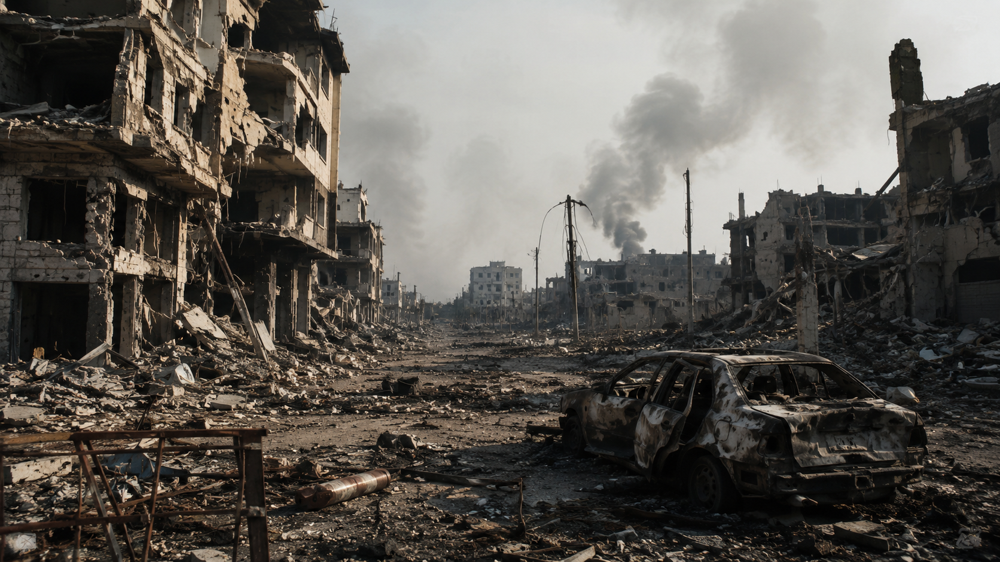

Em meio a tantas guerras. A copa do mundo é sua principal preocupação?
Guerras...
EUA acaba de realizar novos ataques ao IRÃ. Enquanto você assiste a Copa do Mundo, o resto do Mundo sofre. Enquanto todos estão focados na copa do mundo, os presidentes desses países que estão sofrendo, deviam ajudar a população, fazer jus ao seu mandato, não se esgueira atrás de Copa do Mundo enquanto seu país está afundando em tragédias.

Reportagem...
Nesse Mundo atual, no mês atual, o que dá mais hype aos Jornais, falar do evento mais aguardado do Mundo, ou do próprio Mundo sofrendo enquanto eles transmitem jogos e deixam as notícias de lado? Não precisa ser nenhum gênio para sacar a estratégia de marketing deles. Após a copa, ai sim irão falar sobre o Mundo atual, mesmo que seja escondendo fatos preciosos para a população que consome os Jornais e as notícias alteradas neles. Nenhum jornal é verdadeiro.
A Saúde...
Enquanto todos os presidentes estão voltados a Copa do Mundo, nenhum está realmente preocupado com a sua população e em quem votou nele, ele está puramente preocupado com o dinheiro dele no final do mês. Já não basta roubar a população, não faz nada beneficiente para ela, rouba sem intuito de ajudar depois, e roubam com a maior falta de decoro. Enquanto muitos cidadãos morrem todo dia em cama de Hospitais, políticos estão se vangloriando por não fazerem nem o minímo.